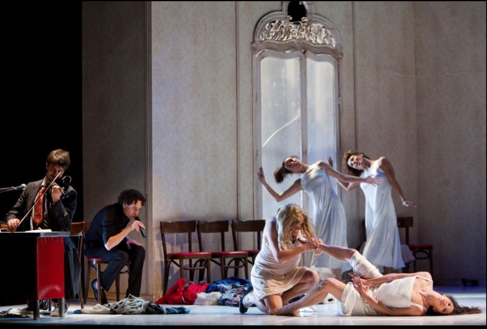
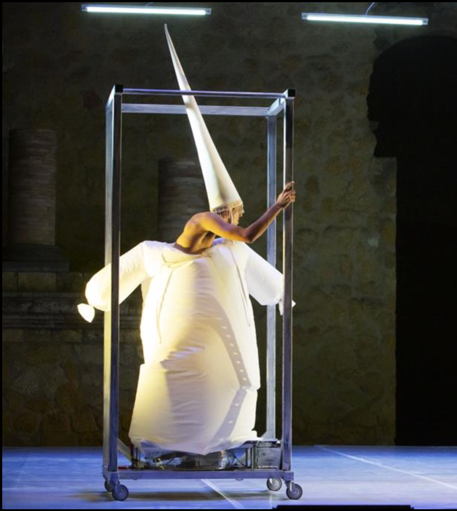
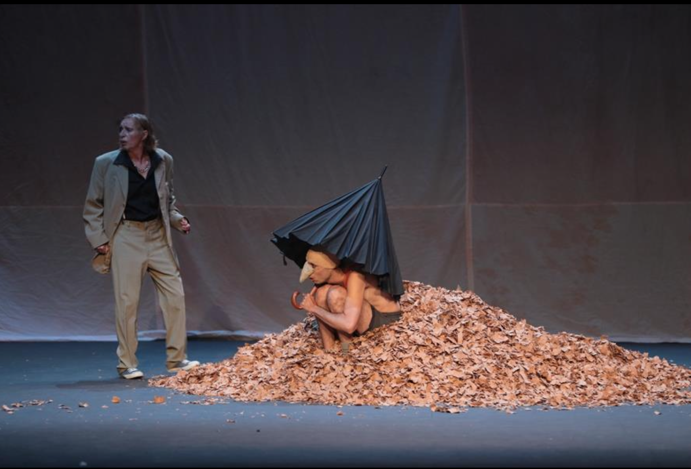
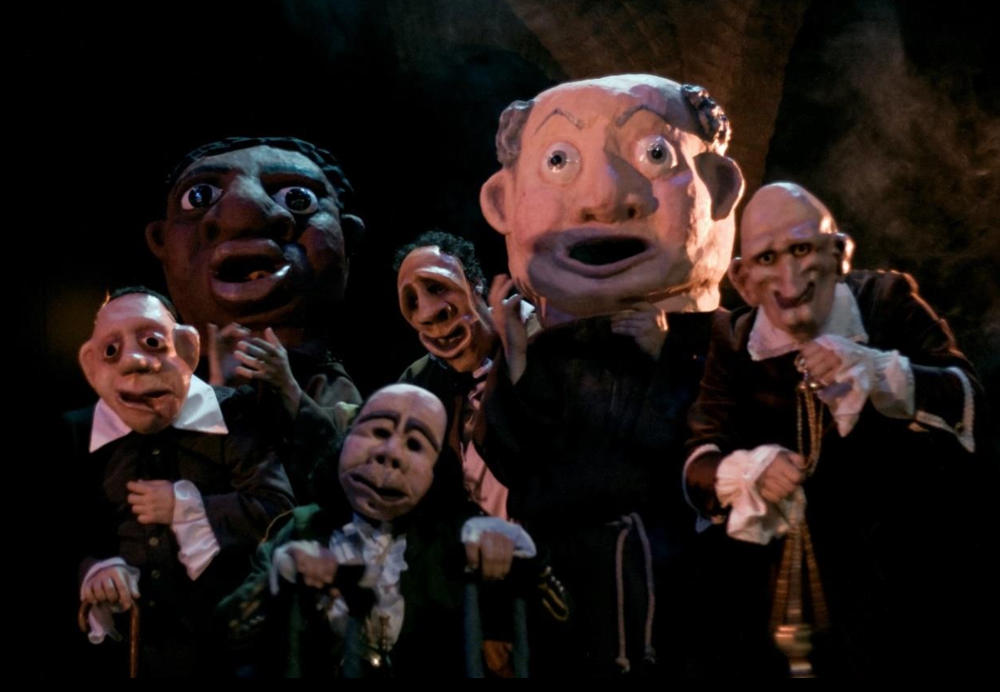
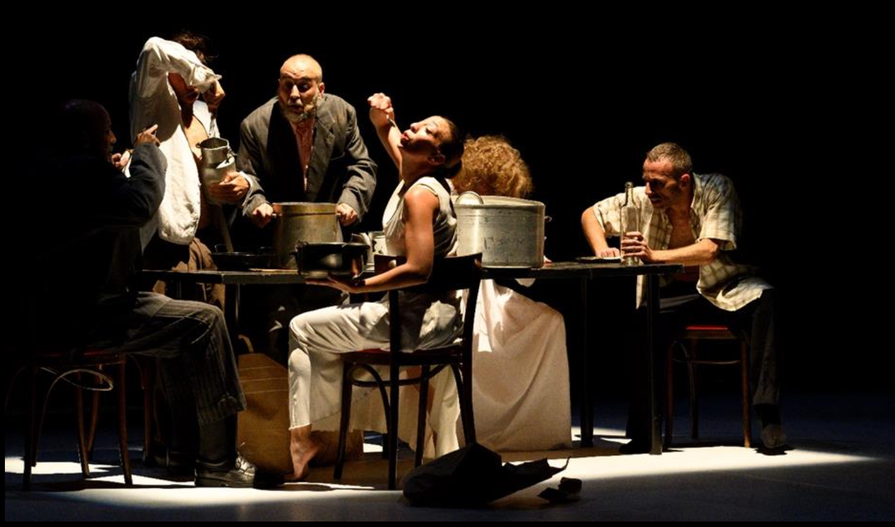

Mi trabajo se sitúa en los márgenes de lo normativo, explorando lo contemporáneo desde la deformación, lo grotesco y la contradicción. Me interesa aquello que escapa de la armonía clásica: lo inacabado, el exceso, la tensión entre lo bello y lo inquietante.
La escena es un espacio de fricción donde lo social y lo íntimo se entrelazan. En ella conviven cuerpos, imágenes y lenguajes que se descomponen y recomponen constantemente, revelando capas ocultas de la realidad.
Trabajo con un realismo grotesco que no busca representar el mundo tal como es, sino transformarlo, tensarlo y hacerlo visible desde otros ángulos. Me interesa lo que permanece oculto: lo marginal, lo desechado, lo que no encaja.
Cada creación es un territorio híbrido donde teatro, danza, flamenco y ópera dialogan para construir un lenguaje propio. Un espacio donde lo poético emerge como resistencia frente a lo evidente, y donde la escena se convierte en un acto de revelación.
Juan Dolores Caballero es director y creador escénico formado en el Instituto del Teatro de Sevilla y graduado en Bellas Artes por la Universidad de Sevilla.
Su trayectoria abarca distintos territorios de la escena: teatro clásico, dramaturgia contemporánea, danza, flamenco y ópera. En sus trabajos desarrolla una escritura escénica propia donde conviven la dirección, la imagen, el cuerpo, el espacio y la composición plástica.
Ha dirigido más de cincuenta espectáculos, presentados en espacios y festivales como el Festival Internacional de Teatro Clásico de Almagro, el Festival de Mérida, el Teatro Central y el Teatro Lope de Vega de Sevilla, el Círculo de Bellas Artes de Madrid, el Festival Internacional de Danza de Itálica y diversos circuitos nacionales e internacionales.
Su trabajo ha sido reconocido en numerosas ocasiones, siendo finalista de los Premios Max y recibiendo premios y menciones en distintos ámbitos de la escena, la danza y el flamenco.
Además de su labor como director, ha desarrollado una intensa actividad docente: fue director y profesor de la Escuela de Dirección y Escenografía del Centro Andaluz de Teatro y profesor externo del Máster de Artes del Espectáculo Vivo de la Universidad de Sevilla.
Las Gracias Mohosas · El Invisible Príncipe del Baúl · Rey Perico y la Dama Tuerta · La cárcel de Sevilla
Las Presidentas (Werner Schwab) · La Noche (Maeterlinck) · El Rayo Colgado (Francisco Nieva) · El Deseo atrapado por la cola (Picasso)
Augusto · Dröppo
Rey para una tarde lluviosa (Ricardo III) · Hildegard · Upper · La Cocina de los Ángeles · Les Vieux · Hamvito
La Medium (Menotti) · El Pequeño Deshollinador (Britten) · Metamorfosis (Diana Pérez Custodio)
Catedral (Premio Nacional de Danza 2022) · Distopía · Lenguaje oculto · La tentación de Poe · Origen
Entrevista en Canal Sur donde Juan Dolores Caballero reflexiona sobre su trayectoria, su proceso creativo y su visión de la escena contemporánea.
Ver entrevista en Canal Sur



